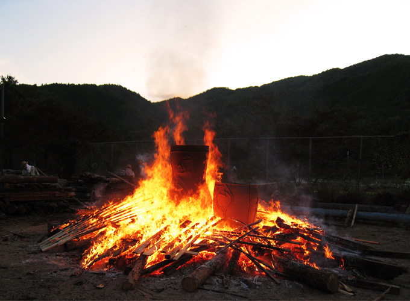
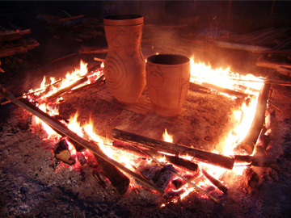
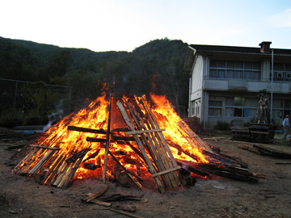
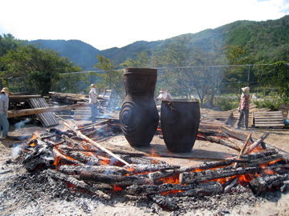
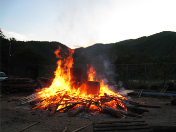
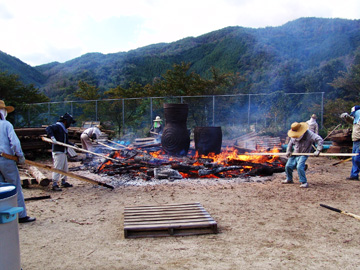
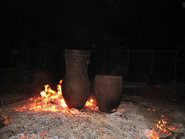

|  |
文様・造形の多彩かつ根源的な様相から、日本が世界に誇る縄文土器。
現存している日本最大級の縄文土器は、岩手県大館町遺跡出土の大型深鉢形土器
（高さ93cm 最大径61.5cm 盛岡市遺跡の学び館所蔵）です。
また弥生時代まで含めてみても、野焼き技法による大型土器は120cmを超えるものはありません。
これまで猪風来は、縄文造形・文様を自在に駆使し発展させ、膨大な独自の作品群を創作してきました。
オブジェについては、すでに野焼きによる大型作品（『虚空へ』高さ130cm）を制作しています。
今回新たに挑戦したのは、前人未踏の「日本最大の創作縄文土器の野焼き」でした。
=∴=∵=∴=∵=∴=∵=∴=∵=∴=∵=∴=∵=∴=∵=∴=∵=∴=∵=∴=∵=∴=∵=∴=∵=∴=∵=∴=
台風１８号が通り過ぎた１０月１０日朝６時に火入れ、翌１１日夜８時に野焼き完了。
総３８時間、猛烈な炎と対峙した熱いドラマ。壮大な挑戦でしたが、無事に焼き上げる事ができました。
炎の力でどっしりと存在感を増した183cmのこの土器をもとに、日本最大の縄文太鼓制作に入ります。
野焼きに協力してくださった法曽焼同好会の方々、外から駆けつけて手伝ってくれた友人たちに感謝。
また燃料の材木確保のために努力して下さった方々にも篤く御礼申し上げます。
|  |  |
| 【大地に子宮を創る・１】（１日目夜） | 【火の子宮ができた】（２日目夕方） |
|  |  |
| 【大地に子宮を創る・２】（２日目朝） | 【火につつまれる土器】（２日目夜） |
|  |  |
| 【大地に子宮を創る・３】（２日目昼） | 【生まれた新しい命の形】（２日目深夜） |